अध्याय 4: अंतरराष्ट्रीय संगठन (अंतरराष्ट्रीय Organisations) - भाग 1
जब हम एक ऐसी दुनिया में रहते हैं जहाँ देशों के बीच अक्सर युद्ध, सीमा विवाद, और वैचारिक संघर्ष की स्थिति बनी रहती है, तो हमें एक ऐसी निष्पक्ष संस्था की ज़रूरत महसूस होती है जो इन विवादों को शांति से सुलझा सके। संयुक्त राष्ट्र संघ (UN) इस दिशा में दुनिया का सबसे बड़ा और महत्वपूर्ण संगठन है।
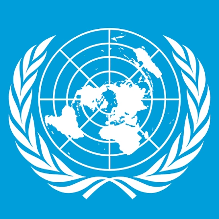
संयुक्त राष्ट्र का आधिकारिक प्रतीक चिन्ह (Official Emblem of the UN)
संयुक्त राष्ट्र संघ के इस प्रतीक चिन्ह में दुनिया का मानचित्र बना हुआ है, जिसके दोनों तरफ जैतून (Olive) की पत्तियां हैं। जैतून की पत्तियां पूरी दुनिया में वैश्विक शांति (World Peace) का प्रतीक मानी जाती हैं।
1. हमें अंतरराष्ट्रीय संगठनों की आवश्यकता क्यों है?
कई बार आलोचक पूछते हैं कि क्या ये संगठन वाकई काम करते हैं? इसका जवाब प्रसिद्ध दूसरे यूएन महासचिव डैग हैमरशोल्ड (Dag Hammarskjöld) के शब्दों में है:
— डैग हैमरशोल्ड (यूएन के दूसरे महासचिव)
— शशि थरूर (यूएन के पूर्व अवर-महासचिव द्वारा उद्धृत)
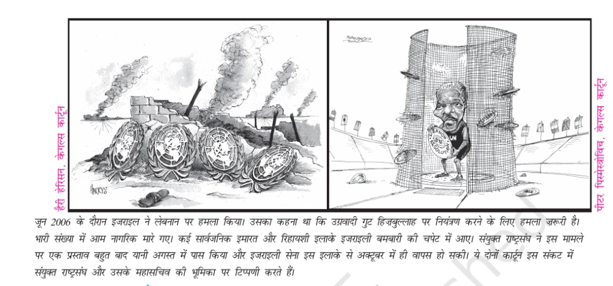
कार्टून का विवरण: बाएं कार्टून (हैरी हैरिसन) में मलबे के बीच संयुक्त राष्ट्र के टूटे हुए प्रतीकों को दिखाया गया है। दाएं कार्टून (पीटर पिसमेस्त्रोविच) में तत्कालीन यूएन महासचिव को एक पिंजरेनुमा बाड़े (जिस पर 'UN Resolution' लिखा है) के भीतर खड़े होकर केवल हवाई हमले/मिसाइलों को देखते हुए लाचार दिखाया गया है।
एनसीईआरटी पाठ्यपुस्तक संदर्भ: जून 2006 के दौरान इजराइल ने लेबनान पर हमला किया। उसका कहना था कि उग्रवादी गुट हिज़बुल्लाह पर नियंत्रण करने के लिए हमला ज़रूरी है। भारी संख्या में आम नागरिक मारे गए। कई सार्वजनिक इमारत और रिहायशी इलाके इजराइली बमबारी की चपेट में आए। संयुक्त राष्ट्र संघ ने इस मामले पर एक प्रस्ताव बहुत बाद यानी अगस्त में पास किया और इजराइली सेना इस इलाके से अक्टूबर में ही वापस हो सकी। ये दोनों कार्टून इस संकट में संयुक्त राष्ट्रसंघ और उसके महासचिव की भूमिका पर टिप्पणी करते हैं।
अंतरराष्ट्रीय संगठनों की आवश्यकता के मुख्य कारण निम्नलिखित हैं:
- युद्ध को रोकना (Preventing Wars): देशों के बीच विवादों को सुलझाने के लिए एक कूटनीतिक मंच (Diplomatic Forum) प्रदान करना ताकि छोटी सी तकरार बड़े युद्ध में न बदल जाए।
- वैश्विक सहयोग बढ़ाना (Global Cooperation): कुछ वैश्विक समस्याएं ऐसी हैं जिन्हें कोई एक देश अकेले नहीं कर सकता (जैसे जलवायु परिवर्तन, वैश्विक तापमान बढ़ना, आतंकवाद, गरीबी और कोरोना जैसी महामारियां)। इसके लिए साझा मंच आवश्यक है।
- साझा नियम और दिशा-निर्देश: अंतरराष्ट्रीय व्यापार, समुद्री सीमा के नियम, नागरिक उड्डयन और स्वास्थ्य मानकों को तय करने के लिए सार्वभौमिक नियम बनाना।
2. संयुक्त राष्ट्र संघ का विकास (Evolution of the UN)
प्रथम विश्वयुद्ध (1914-1918) की भयानक तबाही के बाद दुनिया के नेताओं ने शांति के लिए 'लीग ऑफ नेशंस' (League of Nations) की स्थापना की थी। लेकिन यह संगठन अत्यधिक कमजोर था और 1939 में शुरू हुए द्वितीय विश्वयुद्ध को रोकने में पूरी तरह विफल रहा।

संयुक्त राष्ट्र संघ की मुख्य प्रशासनिक इमारत जहाँ सुरक्षा परिषद और महासभा के सत्र आयोजित किए जाते हैं।
संयुक्त राष्ट्र संघ की स्थापना की विकास यात्रा (Steps to the Founding of the UN)
संयुक्त राष्ट्र संघ की स्थापना रातोंरात नहीं हुई, बल्कि इसके लिए लंबे समय तक विभिन्न देशों के बीच बैठकों और घोषणाओं का दौर चला। इसकी प्रमुख सीढ़ियां निम्नलिखित हैं:
| समय | घटना / विकास यात्रा के कदम |
|---|---|
| अगस्त 1941 | अमेरिकी राष्ट्रपति फ्रैंकलिन डी. रूजवेल्ट और ब्रिटिश प्रधानमंत्री विंस्टन चर्चिल द्वारा अटलांटिक चार्टर (Atlantic Charter) पर हस्ताक्षर किए गए। |
| जनवरी 1942 | धुरी शक्तियों (जर्मनी, इटली, जापान) के खिलाफ लड़ रहे 26 मित्र राष्ट्र मिलकर वाशिंगटन डी.सी. में 'डिक्लेरेशन बाय यूनाइटेड नेशंस' (Declaration by United Nations) पर हस्ताक्षर करते हैं। |
| दिसंबर 1943 | तेहरान सम्मेलन (Tehran Conference): तीन बड़ी ताकतों (अमेरिका, ब्रिटेन और सोवियत संघ) के नेताओं की बैठक हुई, जहाँ संयुक्त राष्ट्र के निर्माण के विचार को आगे बढ़ाया गया। |
| फरवरी 1945 | याल्टा सम्मेलन (Yalta Conference): रूजवेल्ट, चर्चिल और स्टालिन की बैठक, जहाँ संयुक्त राष्ट्र संघ के गठन के लिए सम्मेलन बुलाने और सुरक्षा परिषद में वीटो (Veto) प्रणाली पर सहमति बनी। |
| अप्रैल-जून 1945 | सैन फ्रांसिस्को सम्मेलन (San Francisco Conference): दो महीने लंबे इस अंतरराष्ट्रीय सम्मेलन में संयुक्त राष्ट्र संघ का चार्टर तैयार किया गया। 26 जून 1945 को 50 देशों ने इस चार्टर पर हस्ताक्षर किए (पोलैंड ने बाद में 15 अक्टूबर को हस्ताक्षर कर वह 51वां संस्थापक सदस्य बना)। |
| 24 अक्टूबर 1945 | संयुक्त राष्ट्र संघ की विधिवत स्थापना: चार्टर के लागू होते ही यूएन अस्तित्व में आया। प्रतिवर्ष 24 अक्टूबर को 'संयुक्त राष्ट्र संघ दिवस' (UN Day) के रूप में मनाया जाता है। |
| 30 अक्टूबर 1945 | भारत सदस्य बना: भारत इसके स्थापना के मात्र 6 दिन बाद 30 अक्टूबर को इसके संस्थापक सदस्य के रूप में इसमें शामिल हो गया। |
3. यूएन के मुख्य उद्देश्य
- विश्व में अंतरराष्ट्रीय शांति, सुरक्षा और स्थिरता बनाए रखना।
- विभिन्न राष्ट्रों के बीच समानता और मित्रवत संबंधों को बढ़ावा देना।
- मानवाधिकारों और बुनियादी स्वतंत्रताओं की रक्षा करना।
- गरीबी, अशिक्षा और महामारियों जैसी अंतरराष्ट्रीय समस्याओं के समाधान के लिए वैश्विक सहयोग सुनिश्चित करना।
यूएन (UN) के प्रमुख अंग और उनके कार्य - भाग 2
संयुक्त राष्ट्र संघ एक विशाल प्रशासनिक मशीनरी है जो छह मुख्य अंगों के माध्यम से वैश्विक गतिविधियों को नियंत्रित करती है।
1. महासभा (General Assembly)
महासभा को अक्सर 'विश्व की संसद' कहा जाता है। इसमें हर सदस्य देश को एक समान वोट देने का अधिकार है (चाहे वह छोटा द्वीप देश हो या कोई बड़ी महाशक्ति)।
- सदस्यता: वर्तमान में इसमें 193 सदस्य देश शामिल हैं।
- मतदान नियम: प्रत्येक सदस्य देश का 1 मत (One Vote) होता है। महत्वपूर्ण फैसलों (जैसे शांति व सुरक्षा, नए देशों के प्रवेश, बजट) के लिए दो-तिहाई (2/3) बहुमत की आवश्यकता होती है, जबकि सामान्य मामलों में निर्णय साधारण बहुमत (Simple Majority) से लिया जाता है।
- कार्य: वैश्विक नीतियों पर चर्चा, नए सदस्यों का प्रवेश, सुरक्षा परिषद के अस्थायी सदस्यों का चुनाव, और संयुक्त राष्ट्र के बजट को मंजूरी देना।
2. सुरक्षा परिषद (Security Council)
यह यूएन का सबसे शक्तिशाली और निर्णय लेने वाला अंग है। इसे पूरी दुनिया का 'ग्लोबल पुलिसमैन' (Global Policeman) कहा जाता है क्योंकि इसके फैसले सदस्य देशों पर कानूनी रूप से बाध्यकारी होते हैं।
- 5 स्थायी सदस्य (P-5): अमेरिका, रूस, ब्रिटेन, फ्रांस और चीन। इनके पास वीटो (Veto Power) का अधिकार होता है।
- 10 अस्थायी सदस्य: ये महासभा द्वारा दो वर्ष के कार्यकाल के लिए चुने जाते हैं। नियम: कोई सदस्य देश अपना 2 वर्ष का कार्यकाल पूरा करने के तुरंत बाद अगले कार्यकाल के लिए दोबारा खड़ा नहीं हो सकता (Cannot be re-elected immediately)।
3. सचिवालय (Secretariat) और महासचिव
सचिवालय संयुक्त राष्ट्र का प्रशासनिक कार्यालय है। इसके कार्यों का संचालन महासचिव (Secretary-General) की देखरेख में होता है।

एंटोनियो गुटेरेस (António Guterres)
पुर्तगाल के पूर्व प्रधानमंत्री जो 1 जनवरी 2017 से संयुक्त राष्ट्र के 9वें महासचिव (Secretary-General) हैं। महासचिव संयुक्त राष्ट्र का मुख्य प्रशासनिक अधिकारी और पूरी दुनिया में इसका चेहरा होता है।
संयुक्त राष्ट्र संघ के महासचिव (UN Secretaries-General List)
संयुक्त राष्ट्र संघ के अब तक के सभी महासचिवों और उनके प्रमुख कार्यों की सूची निम्नलिखित है:
| नाम और देश | कार्यकाल | महत्वपूर्ण योगदान / प्रमुख घटनाएं |
|---|---|---|
| 1. ट्राइग्वे ली (Trygve Lie) नॉर्वे |
1946 - 1952 | संयुक्त राष्ट्र संघ के प्रथम महासचिव। पेशे से वकील और नॉर्वे के विदेश मंत्री थे। उन्होंने कश्मीर पर भारत-पाकिस्तान के बीच पहले युद्ध में युद्धविराम के प्रयास किए तथा कोरियाई युद्ध की समाप्ति के लिए मध्यस्थता की। सोवियत संघ द्वारा उनके दूसरे कार्यकाल का विरोध किए जाने पर इस्तीफा दे दिया। |
| 2. डैग हैमरशोल्ड (Dag Hammarskjöld) स्वीडन |
1953 - 1961 | अर्थशास्त्री और स्वीडन के सिविल सर्वेंट। स्वेज नहर संकट (1956) को शांतिपूर्वक सुलझाने में महत्वपूर्ण भूमिका निभाई। कांगो संकट के दौरान एक हवाई दुर्घटना में मृत्यु। उन्हें मरणोपरांत नोबेल शांति पुरस्कार (1961) से सम्मानित किया गया। |
| 3. यू थांट (U Thant) म्यांमार (बर्मा) |
1961 - 1971 | शिक्षक और राजनयिक। वह एशिया से प्रथम महासचिव थे। उन्होंने प्रसिद्ध क्यूबा मिसाइल संकट (1962) को शांत कराने में महत्वपूर्ण कूटनीतिक सफलता प्राप्त की। वियतनाम युद्ध के दौरान अमेरिका की नीतियों की आलोचना की तथा भारत-पाकिस्तान युद्ध (1965) के समय मध्यस्थता की। |
| 4. कुर्त वाल्डहाइम (Kurt Waldheim) ऑस्ट्रिया |
1972 - 1981 | राजनयिक और ऑस्ट्रिया के विदेश मंत्री। उनके कार्यकाल के दौरान बांग्लादेश संकट और भारत-पाकिस्तान युद्ध (1971) के बाद नामीबिया और पश्चिम एशिया संकट सुलझाने के शांति प्रयास किए गए। तीसरे कार्यकाल के लिए उनके नाम पर चीन ने वीटो कर दिया था। |
| 5. जेवियर पेरेज डी कुइयार (Javier Pérez de Cuéllar) पेरू |
1982 - 1991 | राजनयिक और वकील। फॉकलैंड युद्ध (1982) के बाद मध्यस्थता की। नामीबिया की स्वतंत्रता में महत्वपूर्ण भूमिका। ईरान-इराक युद्ध (1988) में युद्धविराम के लिए मध्यस्थता की। |
| 6. बुतरस बुतरस घाली (Boutros Boutros-Ghali) मिस्र |
1992 - 1996 | अकादमिक, वकील और मिस्र के विदेश मंत्री। उनके कार्यकाल में सोमालिया, रवांडा और पूर्व यूगोस्लाविया (बोस्निया संकट) में यूएन के शांति स्थापना अभियानों में वृद्धि हुई। अमेरिका के विरोध के कारण दूसरे कार्यकाल के लिए नहीं चुने गए। |
| 7. कोफी अन्नान (Kofi Annan) घाना |
1997 - 2006 | संयुक्त राष्ट्र संघ के अधिकारी। उन्होंने वैश्विक एड्स फंड (Global AIDS Fund) की स्थापना की। अमेरिकी नेतृत्व वाले इराक आक्रमण (2003) को अवैध घोषित किया। उन्हें और संयुक्त राष्ट्र संघ को संयुक्त रूप से नोबेल शांति पुरस्कार (2001) दिया गया। |
| 8. बान की-मून (Ban Ki-moon) दक्षिण कोरिया |
2007 - 2016 | राजनयिक और दक्षिण कोरिया के विदेश मंत्री। सतत विकास लक्ष्यों (SDGs) और जलवायु परिवर्तन पर पेरिस समझौते (2015) को लागू करने में महत्वपूर्ण भूमिका निभाई। यूएन शांति सेनाओं को सुदृढ़ किया। |
| 9. एंटोनियो गुटेरेस (António Guterres) पुर्तगाल |
2017 - वर्तमान | पुर्तगाल के पूर्व प्रधानमंत्री और यूएन शरणार्थी उच्चायुक्त (UNHCR)। जलवायु परिवर्तन, वैश्विक असमानता, सतत विकास और बहुपक्षीय कूटनीति के प्रबल समर्थक। |
4. अंतरराष्ट्रीय न्यायालय (अंतरराष्ट्रीय Court of Justice - ICJ)
यह यूएन का मुख्य न्यायिक अंग है जो देशों के बीच होने वाले कानूनी और सीमा विवादों का फैसला करता है।
- न्यायाधीशों की संख्या: इसमें कुल 15 न्यायाधीश होते हैं।
- कार्यकाल: न्यायाधीशों का चुनाव 9 वर्ष के कार्यकाल के लिए किया जाता है। वे महासभा और सुरक्षा परिषद दोनों में स्वतंत्र रूप से पूर्ण बहुमत प्राप्त करके चुने जाते हैं।
- मुख्यालय: द हेग, नीदरलैंड (Peace Palace)।

नीदरलैंड के द हेग शहर में स्थित यह भव्य महल अंतरराष्ट्रीय न्यायालय (ICJ) का मुख्यालय है।
5. अन्य प्रमुख अंग (Other Major Organs)
-
आर्थिक और सामाजिक परिषद (ECOSOC):
- इसमें वर्तमान में 54 सदस्य देश हैं।
- इनका चुनाव महासभा द्वारा 3 वर्ष के कार्यकाल के लिए किया जाता है।
- नियम: प्रत्येक वर्ष परिषद के एक-तिहाई (1/3) सदस्य सेवानिवृत्त होते हैं और नए सदस्यों का चुनाव किया जाता है।
- कार्य: वैश्विक गरीबी उन्मूलन, सामाजिक कल्याण, मानवाधिकार, शिक्षा और सांस्कृतिक सहयोग से संबंधित यूएन की विभिन्न विशेष एजेंसियों के कार्यों का समन्वय करना।
-
न्यास परिषद (Trusteeship Council):
- यह परिषद उन क्षेत्रों की देखरेख के लिए बनाई गई थी जो स्वशासन प्राप्त नहीं कर पाए थे।
- निलंबन: 1 नवंबर 1994 को अंतिम न्यास क्षेत्र 'पलाऊ' के स्वतंत्र होने के बाद इसके कार्यों को औपचारिक रूप से निलंबित कर दिया गया है।
यूएन (UN) में सुधारों की आवश्यकता - भाग 3
1945 में जब संयुक्त राष्ट्र बना था, तो दुनिया वैसी नहीं थी जैसी आज है। तब शीत युद्ध चल रहा था, और आज दुनिया 'एकध्रुवीय' या 'बहुध्रुवीय' बनने की ओर बढ़ रही है। इसलिए, यूएन की संरचना और कार्यप्रणाली में बदलाव की मांग उठ रही है।
1. सुरक्षा परिषद में सुधार (Changes in Security Council)
सबसे बड़ा विवाद सुरक्षा परिषद के विस्तार और उसकी वीटो प्रणाली को लेकर है। दुनिया चाहती है कि P-5 (स्थायी सदस्यों) की संख्या बढ़ाई जाए और निर्णय लेने की प्रक्रिया अधिक न्यायसंगत हो।
सुरक्षा परिषद के स्थायी और अस्थायी सदस्यों में अंतर (Permanent vs Non-Permanent Members)
| अंतर का आधार | स्थायी सदस्य (Permanent Members) | अस्थायी सदस्य (Non-Permanent Members) |
|---|---|---|
| संख्या (Number) | इनकी संख्या केवल 5 (P-5) है। | इनकी कुल संख्या 10 है (महासभा द्वारा चुनी जाती है)। |
| वीटो पावर (Veto Power) | इन्हें नकारात्मक वोट या वीटो (Veto) का अधिकार प्राप्त है। | इन्हें वीटो का कोई अधिकार नहीं होता है। |
| कार्यकाल (Tenure) | ये सदस्य स्थायी रूप से बने रहते हैं और कभी सेवानिवृत्त नहीं होते। | इनका कार्यकाल केवल 2 वर्ष का होता है। कार्यकाल पूरा होने पर तुरंत दोबारा नहीं चुने जा सकते। |
| प्रतिनिधित्व (Representation) | यह द्वितीय विश्वयुद्ध के तात्कालिक विजेताओं के प्रभाव को दर्शाता है। | यह विश्व के सभी भौगोलिक क्षेत्रों (एशिया, अफ्रीका, लातिनी अमेरिका) के प्रतिनिधित्व के लिए रोटेशन पर आधारित है। |
स्थायी सदस्यता के लिए 1997 में प्रस्तावित 6 मानदंड (Proposed Criteria of 1997)
1 जनवरी 1997 को तत्कालीन महासचिव कोफी अन्नान ने सुरक्षा परिषद के सुधारों के तहत नए स्थायी और अस्थायी सदस्यों के चयन के लिए 6 प्रमुख मानदंड प्रस्तावित किए थे। एक नए सदस्य में निम्नलिखित योग्यताएं होनी चाहिए:
- बड़ी आर्थिक ताकत (Major Economic Power): वह देश एक बड़ी वैश्विक आर्थिक शक्ति होना चाहिए।
- बड़ी सैन्य ताकत (Major Military Power): सैन्य रूप से उस देश की क्षमता और ताकत बड़ी होनी चाहिए।
- यूएन बजट में महत्वपूर्ण योगदान (Significant Contributor to UN Budget): संयुक्त राष्ट्र संघ के वित्तीय बजट में उसका नियमित और बड़ा योगदान होना चाहिए।
- बड़ी आबादी (Large Population): जनसंख्या के मामले में वह एक विशाल राष्ट्र होना चाहिए।
- लोकतंत्र और मानवाधिकारों का सम्मान (Respect for Democracy और Human Rights): उस देश में एक मजबूत लोकतांत्रिक व्यवस्था होनी चाहिए और वह मानवाधिकारों की रक्षा करता हो।
- विश्व की विविधता का प्रतिनिधित्व (Representation of Diversity): भौगोलिक, आर्थिक प्रणालियों और सांस्कृतिक रूप से वह देश विश्व की विविधता का प्रतिनिधित्व करता हो ताकि परिषद संतुलित दिखे।
इन मानदंडों पर विवाद और प्रश्न (Debates और Questions on Criteria)
ये मानदंड दिखने में सरल हैं, लेकिन इनके व्यावहारिक उपयोग पर सदस्य देशों के बीच गंभीर असहमति है:
- आर्थिक ताकत: कोई देश कितना अमीर होना चाहिए कि उसे स्थायी सदस्य बनाया जाए? क्या विकासशील देशों की श्रेणी के देशों को भी इसमें जगह मिलेगी?
- सैन्य ताकत: सैन्य ताकत का पैमाना क्या हो? क्या केवल परमाणु हथियार रखने वाले देशों को ही शक्तिशाली माना जाएगा, या शांति अभियानों में योगदान को?
- बजट योगदान: यदि केवल अधिक बजट देने वाले को ही स्थायी सदस्यता मिलती है, तो क्या सुरक्षा परिषद केवल अमीर देशों का क्लब बनकर नहीं रह जाएगी?
- आबादी: क्या बड़ी आबादी किसी देश के लिए एक योग्यता है या विकास में एक बाधा/बोझ? यदि आबादी मानदंड है, तो छोटे लोकतांत्रिक देशों का क्या होगा?
- लोकतंत्र: क्या केवल लोकतांत्रिक देश ही यूएन के निर्णय ले सकते हैं? क्या उन तानाशाही सरकारों को बाहर रखना सही है जो करोड़ों लोगों पर शासन कर रही हैं?

कार्टून का विवरण: पुस्तक के हाशिये में दिया गया छात्र (चश्मा और बैग पहने मुस्कुराता हुआ लड़का) जो यूएन की सदस्यता प्रणाली पर टिप्पणी कर रहा है।
छात्र का कथन: "शीत युद्ध हो या न हो, एक सुधार तो सबसे पहले जरूरी है। संयुक्त राष्ट्र संघ में केवल लोकतांत्रिक नेताओं को ही अपने देश का प्रतिनिधित्व करने का हक होना चाहिए। आखिर किसी तानाशाह को अपने देश की जनता की ओर से बोलने की अनुमति कैसे दी जा सकती है?"
- प्रतिनिधित्व की कमी: वर्तमान सुरक्षा परिषद में एशिया, अफ्रीका और दक्षिण अमेरिका जैसे महाद्वीपों का उचित प्रतिनिधित्व नहीं है।
- वीटो पावर का दुरुपयोग: अक्सर स्थायी सदस्य अपनी वीटो पावर का इस्तेमाल अपने निजी स्वार्थों के लिए करते हैं, जिससे शांति प्रक्रिया रुक जाती है।
2. संगठन की कार्यप्रणाली में बदलाव
कई विशेषज्ञों का मानना है कि यूएन को शांति और सुरक्षा के अलावा अन्य महत्वपूर्ण क्षेत्रों पर अपना ध्यान ज़्यादा केंद्रित करना चाहिए:
- मानवीय सहायता: अकाल, भूकंप और महामारियों के समय यूएन की भूमिका तेज़ होनी चाहिए।
- पर्यावरण और स्वास्थ्य: जलवायु परिवर्तन और डब्लू.एच.ओ. (WHO) के माध्यम से स्वास्थ्य सेवाओं को सुदृढ़ बनाना।
- शांति स्थापना (Peace Keeping): युद्धग्रस्त क्षेत्रों में शांति सेनाओं की भूमिका को और अधिक प्रभावी बनाना।
3. लोकतंत्र और मानवाधिकारों को बढ़ावा
आज यूएन केवल युद्ध रोकने तक सीमित नहीं है, बल्कि वह दुनिया भर में लोकतंत्र (Democracy) और मानवाधिकारों (Human Rights) की रक्षा के लिए नए संस्थानों के गठन की भी मांग कर रहा है।
सुरक्षा परिषद में भारत का दावा - भाग 4
भारत दुनिया का सबसे बड़ा लोकतंत्र (The World's Largest Democracy) है और वह लंबे समय से संयुक्त राष्ट्र सुरक्षा परिषद (UNSC) में स्थायी सदस्यता (Permanent Membership) की मांग कर रहा है। भारत के पास इसके लिए बहुत मजबूत तर्क और योग्यताएं हैं।
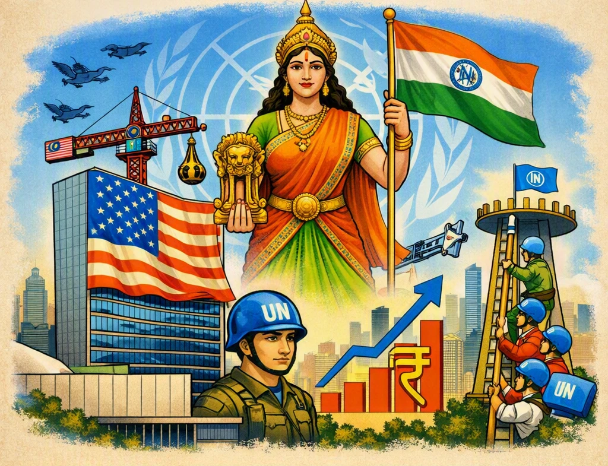
यह चित्र संयुक्त राष्ट्र संघ (UN) में भारत की बढ़ती भूमिका, मजबूत लोकतंत्र, तीव्र आर्थिक विकास और वैश्विक शांति अभियानों में योगदान को दर्शाता है, जो इसे सुरक्षा परिषद (UNSC) की स्थायी सदस्यता का सबसे प्रमुख हकदार बनाते हैं।
1. भारत की सदस्यता के पक्ष में तर्क (Arguments for India's Claim)
भारत सुरक्षा परिषद (UNSC) में स्थायी सदस्यता का सबसे सशक्त दावेदार है। इसके समर्थन में निम्नलिखित 5 प्रमुख तर्क दिए जाते हैं:
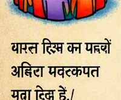
1. विशाल जनसंख्या (Huge Population)
भारत दुनिया की सबसे बड़ी आबादी वाला देश है। यहाँ विश्व की कुल जनसंख्या का लगभग 18% हिस्सा निवास करता है। इतनी बड़ी मानव आबादी का संयुक्त राष्ट्र सुरक्षा परिषद के स्थायी निर्णय लेने वाले अंग में प्रतिनिधित्व होना बेहद आवश्यक है।
2. सफल और स्थिर लोकतंत्र (Stable Democracy)
भारत विश्व का सबसे बड़ा और निरंतर सफल रहने वाला लोकतंत्र है। भारत ने हमेशा अंतरराष्ट्रीय स्तर पर लोकतांत्रिक मूल्यों, बहुपक्षवाद, मानवाधिकारों और कानून के शासन का पुरजोर समर्थन और पालन किया है।
3. बढ़ती हुई आर्थिक शक्ति (Growing Economic Power)
भारत विश्व की सबसे तेज़ गति से आगे बढ़ने वाली प्रमुख अर्थव्यवस्थाओं में से एक है। इसकी विशाल आर्थिक क्षमता, बड़ा घरेलू बाज़ार और विदेशी निवेश के केंद्र के रूप में उभरता प्रभाव इसे एक अपरिहार्य वैश्विक आर्थिक शक्ति बनाते हैं।
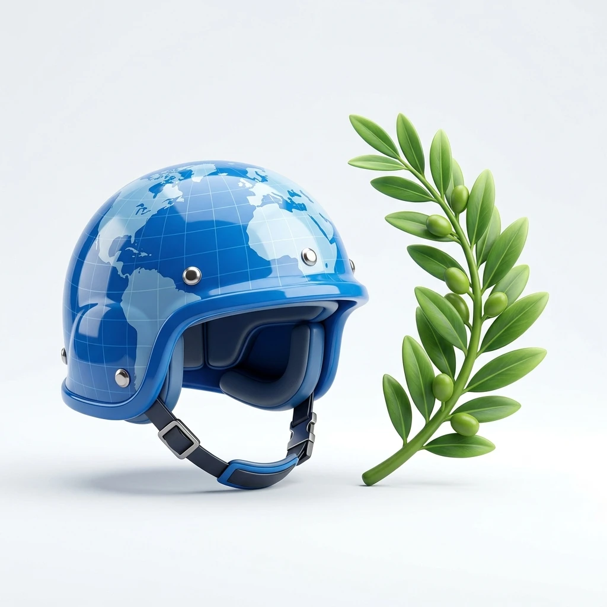
4. शांति अभियानों में अनुकरणीय योगदान (Peacekeeping Operations)
भारत संयुक्त राष्ट्र के शांति स्थापना अभियानों (UN Peacekeeping Missions) में सबसे ज्यादा सैनिक भेजने वाले शीर्ष देशों में से एक है। भारतीय सैनिकों ने दुनिया भर के अशांत क्षेत्रों में शांति और स्थिरता बहाल करने के लिए अपनी शहादत और सेवा दी है।
5. बढ़ता वैश्विक प्रभाव और जिम्मेदारी (Global Stature)
भारत एक परमाणु शक्ति संपन्न राष्ट्र होने के बावजूद हमेशा एक अत्यंत ज़िम्मेदार वैश्विक कर्ता रहा है। गुटनिरपेक्ष आंदोलन के नेतृत्व से लेकर वैश्विक मंचों (जैसे G20 की अध्यक्षता) तक, भारत ने विकासशील देशों (Global South) की आवाज़ को मजबूती से उठाया है।
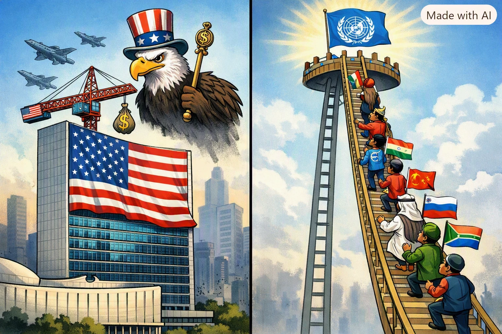
कार्टून का विवरण: कार्टून में एक तरफ यूएन के सचिवालय भवन पर अमेरिकी वर्चस्व का झंडा और क्रेन, तथा दूसरी तरफ यूएन के सर्वोच्च पायदान पर चढ़ने के लिए लगी लंबी सीढ़ी पर चढ़ते देशों को दिखाया गया है।
कार्टून का संदेश: यह दर्शाता है कि कैसे उभरती हुई शक्तियाँ (जैसे भारत) सीढ़ी चढ़कर यूएन के निर्णय लेने वाले शीर्ष अंगों (सुरक्षा परिषद) में शामिल होना चाहती हैं, जबकि पुराने सदस्य वर्चस्व बनाए रखने के लिए इस सीढ़ी पर नियंत्रण रखते हैं।

चित्र का विवरण: हाशिये में एक छात्र का कार्टून (फोन पर बात करता हुआ लड़का) जो स्थायी देशों की 'दादागिरी' पर कटाक्ष कर रहा है।
छात्र का प्रश्न: "क्या हम पाँच बड़े दादाओं की दादागिरी खत्म करना चाहते हैं या उनमें शामिल होकर एक और दादा बनना चाहते हैं?"

चार्ट का विवरण: सोवियत संघ/रूस (135 बार), अमेरिका (84 बार), ब्रिटेन (32 बार), फ्रांस (18 बार), और चीन (11 बार) द्वारा वीटो पावर के उपयोग को दर्शाता आधिकारिक बार आरेख। यह सुरक्षा परिषद की असमानता को उजागर करता है।
2. भारत की राह में रुकावटें (Challenges)
इतनी योग्यताओं के बावजूद, कुछ देश भारत की सदस्यता का विरोध करते हैं:
- पाकिस्तान: भारत का पड़ोसी देश पाकिस्तान हमेशा भारत के स्थायी सदस्य बनने का विरोध करता है।
- चीन: चीन सुरक्षा परिषद का स्थायी सदस्य है और वह अक्सर भारत की उम्मीदवारी को रोकने की कोशिश करता है।
- अन्य दावेदार: जर्मनी, जापान और ब्राज़ील जैसे देश भी स्थायी सदस्यता की मांग कर रहे हैं, जिससे यह मामला और जटिल हो गया है।
संयुक्त राष्ट्र (UN) और अमेरिका का वर्चस्व - भाग 5
सोवियत संघ के पतन के बाद, अमेरिका दुनिया की एकमात्र महाशक्ति बन गया। अमेरिका का दबदबा (Hegemony) न केवल पूरी दुनिया पर है, बल्कि संयुक्त राष्ट्र संघ पर भी उसका गहरा प्रभाव देखा जाता है
1. अमेरिका का यूएन पर प्रभाव क्यों है?
इसके कुछ मुख्य कारण निम्नलिखित हैं:
- आर्थिक योगदान: यूएन के बजट में अमेरिका सबसे ज्यादा हिस्सा देता है। अमेरिका के बिना यूएन का चलना मुश्किल हो सकता है।
- स्थान: संयुक्त राष्ट्र का मुख्यालय (Headquarters) अमेरिका के न्यूयॉर्क शहर में स्थित है। इससे अमेरिका को संगठन की गतिविधियों पर नज़र रखने में आसानी होती है।
- वीटो पावर: अमेरिका के पास वीटो पावर है, जिसका इस्तेमाल वह अक्सर अपने हितों की रक्षा के लिए करता है।
- सांस्कृतिक और सैन्य प्रभाव: दुनिया के अधिकांश देशों पर अमेरिका का काफी प्रभाव है, जिससे वह कई फैसलों को अपने पक्ष में मोड़ने की ताकत रखता है।

कार्टून का विवरण: कार्टून में एक विशाल अमेरिकी सैनिक को एक हाथ में संयुक्त राष्ट्र के लोगो और दूसरे हाथ में हथियार दिखाते हुए पेश किया गया है।
कार्टून का संदेश: यह दर्शाता है कि जब अमेरिका कूटनीतिक रूप से (दाएं हाथ से) बात नहीं मनवा पाता, तो वह सैन्य बल (बाएं हाथ) के उपयोग से पीछे नहीं हटता, जिससे यूएन का महत्व कम होता है।
2. क्या यूएन अमेरिका को रोक सकता है?
यह एक विवादास्पद मुद्दा है। कई बार यूएन ने अमेरिका के फैसलों का विरोध किया है (जैसे इराक युद्ध के समय), लेकिन वह उसे पूरी तरह से रोकने में विफल रहा क्योंकि अमेरिका के पास बहुत ज़्यादा शक्ति है।
3. यूएन की प्रासंगिकता
क्या अमेरिका के वर्चस्व के समय यूएन की ज़रूरत है? हाँ, क्योंकि अमेरिका भी जानता है कि उसे अपनी कुछ गतिविधियों के लिए पूरी दुनिया के देशों की सहमति की ज़रूरत होती है, जो उसे केवल यूएन ही दिला सकता है।
अन्य महत्वपूर्ण अंतरराष्ट्रीय संस्थाएं - भाग 6
संयुक्त राष्ट्र संघ के विभिन्न अंगों के अतिरिक्त, दुनिया में कुछ स्वतंत्र एजेंसियां भी हैं जो वैश्विक अर्थव्यवस्था, व्यापार और सुरक्षा के नियम तय करती हैं।
1. अंतरराष्ट्रीय मुद्रा कोष (IMF)
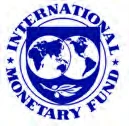
अंतरराष्ट्रीय मुद्रा कोष (अंतरराष्ट्रीय Monetary Fund - IMF)
1944 में स्थापित यह संस्था वैश्विक वित्तीय प्रणाली की देखरेख करती है और सदस्य देशों को वित्तीय सहायता (Loans) प्रदान करती है, विशेषकर उन देशों को जो भुगतान संतुलन (Balance of Payments) के गंभीर संकट से जूझ रहे होते हैं। इसके वोटिंग अधिकारों पर अमेरिका और विकसित देशों का तीव्र प्रभाव है।
2. विश्व बैंक (World Bank)
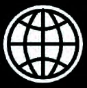
विश्व बैंक (World Bank)
द्वितीय विश्वयुद्ध के दौरान 1944 में इसकी स्थापना की गई थी। यह सदस्य देशों को विकासशील कार्यों के लिए दीर्घकालिक वित्तीय सहायता और तकनीकी सलाह प्रदान करता है। इसका मुख्य ध्यान मानवीय विकास, बुनियादी ढांचा विकास और गरीबी उन्मूलन पर है।
3. विश्व व्यापार संगठन (WTO)
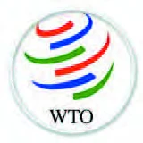
विश्व व्यापार संगठन (World Trade Organization - WTO)
1 जनवरी 1995 को इसकी स्थापना 'गैट' (GATT - General Agreement on Tariffs और Trade) के उत्तराधिकारी के रूप में की गई। यह पूरी दुनिया में बहुपक्षीय व्यापार के नियम बनाता है और वैश्विक व्यापार को बाधा रहित (Free Trade) बनाने के लिए काम करता है।
4. अंतरराष्ट्रीय परमाणु ऊर्जा एजेंसी (IAEA)
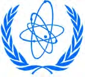
अंतरराष्ट्रीय परमाणु ऊर्जा एजेंसी (IAEA - अंतरराष्ट्रीय Atomic Energy Agency)
इस संस्था की स्थापना 1957 में अमेरिका के राष्ट्रपति ड्वाइट आइजनहावर के "अणु शांति के लिए" (Atoms for Peace) प्रस्ताव के तहत हुई थी। इसका उद्देश्य परमाणु ऊर्जा के केवल असैन्य और शांतिपूर्ण कार्यों (जैसे चिकित्सा और बिजली उत्पादन) को बढ़ावा देना तथा देशों को परमाणु बम बनाने से रोकना है।
मानवाधिकार और गैर-सरकारी संगठन (NGOs) - भाग 7
वैश्विक व्यवस्था में शांति और मानवाधिकारों की रक्षा का कार्य केवल सरकारों तक सीमित नहीं है, बल्कि कई गैर-सरकारी संगठन (NGOs) स्वतंत्र रूप से रिपोर्टें प्रकाशित कर सरकारों पर मानवाधिकारों के सम्मान के लिए दबाव बनाते हैं।
1. एमनेस्टी इंटरनेशनल (Amnesty अंतरराष्ट्रीय)
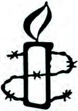
एमनेस्टी इंटरनेशनल (Amnesty अंतरराष्ट्रीय)
यह एक वैश्विक स्वयंसेवी मानवाधिकार संस्था है। यह पूरी दुनिया में मानवाधिकारों के हनन पर शोध करती है और रिपोर्ट प्रकाशित करती. है। इसका मुख्य उद्देश्य राजनीतिक बंदियों की रिहाई सुनिश्चित करना, यातना और मृत्युदंड के खिलाफ अभियान चलाना है। इसकी रिपोर्टें वैश्विक जनमत तैयार करने में अत्यंत प्रभावशाली होती हैं।
2. ह्यूमन राइट्स वॉच (Human Rights Watch)
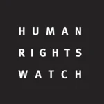
ह्यूमन राइट्स वॉच (Human Rights Watch)
यह एक अन्य अत्यंत महत्वपूर्ण अंतरराष्ट्रीय एनजीओ है जो पूरी दुनिया में मानवाधिकारों के हनन की जांच और वकालत करता है। यह बाल श्रम, बच्चों को जबरन सैनिक बनाने, युद्ध अपराधों, और महिलाओं के खिलाफ हिंसा जैसे गंभीर मुद्दों पर अपनी रिपोर्ट के माध्यम से दुनिया भर की मीडिया का ध्यान आकर्षित करता है।
3. विश्व स्वास्थ्य संगठन (WHO)
विश्व स्वास्थ्य संगठन (World Health Organization - WHO)
7 अप्रैल 1948 को स्थापित यह संयुक्त राष्ट्र की एक विशेष एजेंसी है जो अंतरराष्ट्रीय स्तर पर जन स्वास्थ्य (Public Health) को बढ़ावा देती, है, महामारियों (जैसे कोरोना, पोलियो) के खिलाफ वैश्विक अभियान चलाती है, और विभिन्न स्वास्थ्य मानकों को तय करती है।
निष्कर्ष: यूएन का भविष्य और इसकी प्रासंगिकता - भाग 8
आज की दुनिया 1945 की तुलना में बहुत बदल चुकी है। क्या संयुक्त राष्ट्र संघ आज भी उतना ही प्रासंगिक (Relevant) है? इस पर दुनिया भर के विद्वानों की अलग-अलग राय है, लेकिन एक बात निश्चित है—यूएन के बिना दुनिया और भी खतरनाक होती।
1. यूएन की ज़रूरत क्यों बनी रहेगी?
भविष्य में भी अंतरराष्ट्रीय संगठनों की भूमिका बढ़ती ही जाएगी, क्योंकि:
- वैश्विक समस्याएं: जलवायु परिवर्तन (Climate Change), परमाणु हथियार और महामारियां (जैसे कोविड-19) ऐसी समस्याएं हैं जिनका समाधान कोई एक देश अकेले नहीं कर सकता।
- गरीब देशों की आवाज़: विकासशील और गरीब देशों के लिए यूएन एकमात्र ऐसा मंच है जहाँ उनकी बात सुनी जाती है।
- शांति स्थापना: गृहयुद्धों और अंतरराष्ट्रीय संघर्षों को रोकने के लिए यूएन की मध्यस्थता आज भी सबसे ज्यादा विश्वसनीय मानी जाती है।

कार्टून का विवरण: कार्टूनिस्ट पेट बेगली (Pat Bagley) द्वारा बनाया गया यह कार्टून सूडान के दारफुर प्रांत में मानवीय संकट को दिखाता है, जिसमें पीड़ित व्यक्ति लाचार पड़ा है और संयुक्त राष्ट्र की निष्क्रियता पर टिप्पणी की गई है।
कार्टून का संदेश: यह दर्शाता है कि सुरक्षा परिषद के स्थायी देशों के बीच राजनीतिक मतभेदों और देरी के कारण कैसे संयुक्त राष्ट्र बड़ी मानवीय आपदाओं और नरसंहारों को रोकने में असफल हो जाता है।
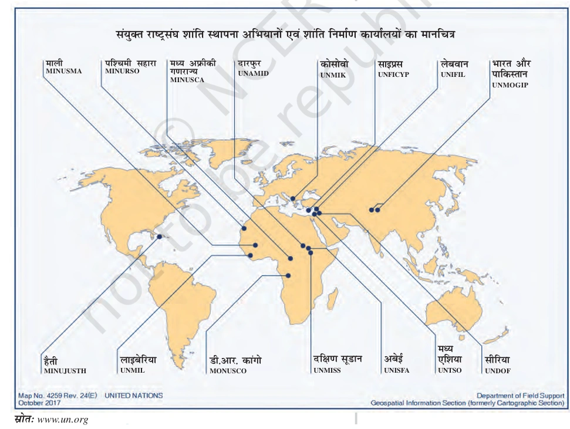
मानचित्र का विवरण: विश्व भर के संघर्षग्रस्त क्षेत्रों (जैसे लेबनान, साइप्रस, लाइबेरिया, कांगो, दक्षिण सूडान आदि) में संयुक्त राष्ट्र द्वारा चलाए जा रहे विभिन्न शांति अभियानों की भौगोलिक स्थिति को दर्शाता आधिकारिक मानचित्र।
संदेश: यह मानचित्र वैश्विक शांति स्थापित करने में यूएन की विशाल पहुँच और सदस्य देशों द्वारा भेजे जाने वाले शांति सैनिकों (Peacekeepers) की क्रियाशीलता को दर्शाता है।
3. संगठन का भविष्य - चुनौतियां और समाधान
भविष्य में यूएन को अधिक लोकतांत्रिक और प्रभावी बनाने के लिए कुछ बड़े कदम उठाने होंगे:
- संरचनात्मक बदलाव: सुरक्षा परिषद का विस्तार करना और उभरती हुई शक्तियों (जैसे भारत) को स्थान देना।
- आर्थिक आत्मनिर्भरता: यूएन को अपनी आय के स्रोतों के लिए केवल एक-दो अमीर देशों पर निर्भर नहीं रहना चाहिए।
- वीटो पावर का सीमित उपयोग: वीटो की शक्ति को कम या नियंत्रित करना ताकि महत्वपूर्ण शांति फैसले रुके नहीं।
2. संयुक्त राष्ट्र की 60वीं वर्षगांठ (2005) पर लिए गए प्रमुख निर्णय (Key Decisions of 2005 Summit)
सितंबर 2005 में संयुक्त राष्ट्र संघ के गठन के 60 वर्ष पूरे होने पर आयोजित शिखर सम्मेलन में दुनिया भर के राष्ट्राध्यक्षों ने भाग लिया। इस ऐतिहासिक बैठक में यूएन को 21वीं सदी के अनुकूल और अधिक प्रासंगिक बनाने के लिए निम्नलिखित 7 महत्वपूर्ण निर्णय लिए गए:
| निर्णय / कदम | विवरण और उद्देश्य |
|---|---|
| 1. शांति संस्थापक आयोग (Peacebuilding Commission) | गृहयुद्ध और संघर्षरत देशों में शांति बहाली करने और युद्ध के बाद पुनर्गठन कार्यों के लिए एक नए शांति संस्थापक आयोग का गठन किया गया। |
| 2. सुरक्षा की जिम्मेदारी (Responsibility to Protect - R2P) | यदि कोई राष्ट्रीय सरकार अपने ही नागरिकों को अत्याचारों, नरसंहार और युद्ध अपराधों से बचाने में नाकाम रहती है, तो संपूर्ण अंतरराष्ट्रीय समुदाय उसकी रक्षा की जिम्मेदारी उठाएगा। |
| 3. मानवाधिकार परिषद (Human Rights Council) | पूर्ववर्ती 'मानवाधिकार आयोग' के स्थान पर एक नई और अधिक सशक्त मानवाधिकार परिषद का गठन किया गया (यह 19 जून 2006 से कार्य कर रही है)। |
| 4. सहस्राब्दी विकास लक्ष्य (Millennium Development Goals - MDGs) | वैश्विक गरीबी, भुखमरी, बीमारी और अशिक्षा को दूर करने के लिए निर्धारित 'सहस्राब्दी विकास लक्ष्यों' को प्राप्त करने की प्रतिबद्धता दोहराई गई। |
| 5. आतंकवाद की स्पष्ट निंदा | आतंकवाद के सभी रूपों, तरीकों और अभिव्यक्तियों की बिना किसी शर्त के कड़ी निंदा की गई और एकजुट होकर लड़ने का संकल्प लिया गया। |
| 6. लोकतंत्र कोष (Democracy Fund) | दुनिया भर में लोकतांत्रिक मूल्यों, चुनावों और मानवाधिकारों को बढ़ावा देने वाले देशों की सहायता के लिए 'यूएन लोकतंत्र कोष' (UN Democracy Fund) का गठन किया गया। |
| 7. न्यास परिषद (Trusteeship Council) की विदाई | 1994 में अंतिम न्यास क्षेत्र (पलाऊ) के स्वतंत्र होने के बाद अप्रासंगिक हो चुकी न्यास परिषद को औपचारिक रूप से समाप्त करने की सहमति बनी। |
4. निष्कर्ष (Summary)
अध्याय का सार यह है कि अंतरराष्ट्रीय संगठन एक 'परफेक्ट' समाधान नहीं हैं, लेकिन वे उस अराजकता और युद्ध से कहीं बेहतर हैं जो उनकी अनुपस्थिति में होगा। सहयोग ही एकमात्र रास्ता है और यूएन उस सहयोग का प्रधान केंद्र है।
अध्याय 4: बोर्ड परीक्षा विशेष (Board Exam Special)
1. मानचित्र कार्य (Map Work) - अत्यंत महत्वपूर्ण
बोर्ड परीक्षा में अंतरराष्ट्रीय संगठनों के मुख्यालयों और पी-5 देशों से जुड़े मैप प्रश्न अक्सर पूछे जाते हैं:
- संयुक्त राष्ट्र संघ का मुख्यालय कहाँ स्थित है: न्यूयॉर्क (अमेरिका)।
- विश्व का एकमात्र देश जिसके पास सुरक्षा परिषद की वीटो पावर है और वह एशिया में स्थित है: चीन।
- यूरोपीय देश जिनके पास स्थायी सदस्यता है: फ्रांस और ब्रिटेन।
- अंतरराष्ट्रीय न्यायालय का मुख्यालय: द हेग (नीदरलैंड)।
- आईएमएफ और विश्व बैंक के मुख्यालय: वॉशिंगटन डीसी (अमेरिका)।
2. पिछले 10 वर्षों के बोर्ड प्रश्न (Previous Year Questions)
इन प्रश्नों का अभ्यास आपको बोर्ड परीक्षा के लिए पूरी तरह तैयार कर देगा:
- Q1. सुरक्षा परिषद की स्थायी सदस्यता के लिए भारत के दावों के पक्ष में कोई तीन तर्क दें। (4 अंक)
- Q2. 'संयुक्त राष्ट्र संघ' का निर्माण किस घटना के बाद हुआ और इसका मुख्य उद्देश्य क्या था? (4 अंक)
- Q3. वीटो पावर (Veto Power) का क्या अर्थ है? यह सुरक्षा परिषद के स्थायी सदस्यों को क्यों दी गई? (2 अंक)
- Q4. शीत युद्ध के बाद संयुक्त राष्ट्र संघ में सुधारों की आवश्यकता क्यों महसूस की गई? (6 अंक)
- Q5. अंतरराष्ट्रीय मुद्रा कोष (IMF) और विश्व बैंक (World Bank) के कार्यों में अंतर स्पष्ट करें। (4 अंक)
- Q6. क्या संयुक्त राष्ट्र संघ अमेरिका के वर्चस्व को नियंत्रित करने में सफल रहा है? तर्क सहित उत्तर दें। (6 अंक)
- Q7. 'एमनेस्टी इंटरनेशनल' और 'ह्यूमन राइट्स वॉच' किस प्रकार मानवाधिकारों की रक्षा करते हैं? (4 अंक)
- Q8. अंतरराष्ट्रीय परमाणु ऊर्जा एजेंसी (IAEA) के मुख्य कार्यों का वर्णन करें। (2 अंक)
3. मास्टर गुरुमन्त्र (Final Tips)
- मुख्यालय: न्यूयॉर्क और वाशिंगटन डीसी में स्थित संस्थानों को अच्छी तरह याद रखें।
- सुरक्षा परिषद: P-5 देशों के नाम और उनकी वीटो पावर पर विशेष ध्यान दें।
- सुधार: शीत युद्ध के बाद आए बदलावों और भारत के दावों को रट लें।
- मानवाधिकार: एमनेस्टी इंटरनेशनल और ह्यूमन राइट्स वॉच की रिपोर्टों के महत्व को समझें।
अध्याय 4 का मास्टर कोर्स संपन्न। अब आप बोर्ड परीक्षा के लिए 100% तैयार हैं!